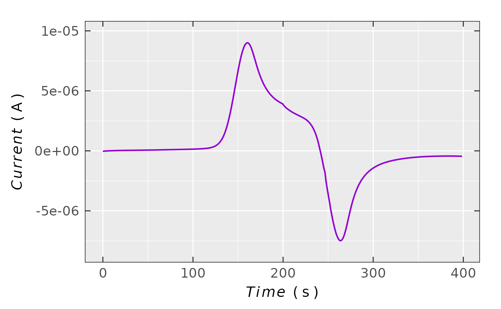
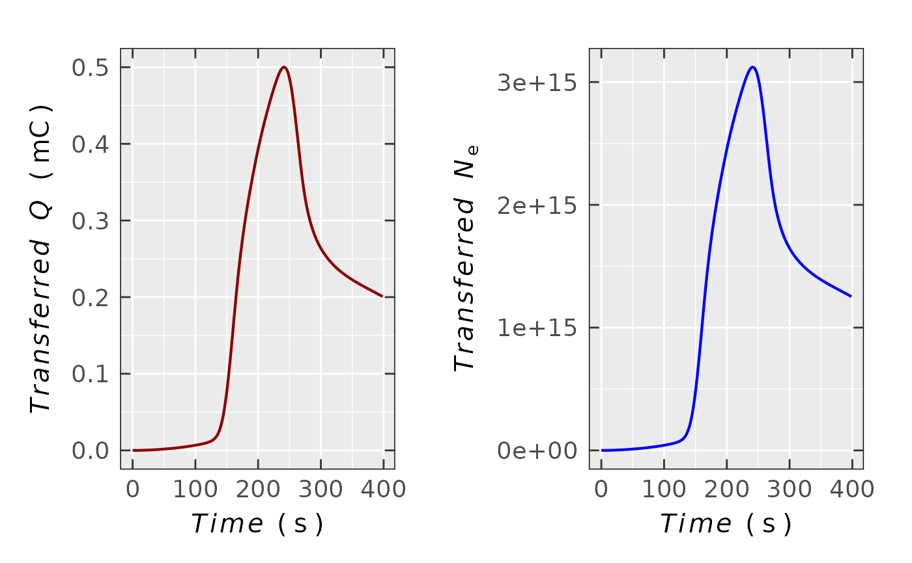

Transferred Charge and Number of Electrons from Chronoamperogram
Source:R/eval_ECh_QNe_chronoamp.R
eval_ECh_QNe_chronoamp.RdEvaluating transferred charge and the corresponding number of electrons
from chronoamperogram related to electrochemical
experiment, performed simultaneously with the EPR time series measurement or independently of the latter.
To acquire charge, the input \(I\) vs \(time\) relation (coming from
data.at) is integrated by the pracma::cumtrapz function.
Prior to integration a capacitive current correction must be done, especially if it is relatively
high in comparison to Faradaic one. Afterwards, the number of electrons is calculated
by Faraday's law (see details). The output plot can be visualized either as \(Q(N_{\text{e}})\) vs
\(t\) (time) or as \(Q(N_{\text{e}})\) vs \(E\) (potential, if available
in the input data.at).
Usage
eval_ECh_QNe_chronoamp(
data.at,
time = "time_s",
time.unit = "s",
tlim = NULL,
Current = "I_A",
Current.unit = "A",
E = NULL,
E.unit = NULL,
ref.electrode = NULL,
Ne.output = TRUE,
separate.plots = FALSE
)Arguments
- data.at
Data frame (table) object including required columns like
Time(\(t\)),Current(\(I\)). Even though an arbitrary column label can be used, the best option is to use labels e.g.time_s,I_uAorI_mA. Optionally, column related to potential (\(E\)) may be present as well for transferred charge (\(Q\)) or number of electrons (\(N_{\text{e}}\)) vs \(E\) visualization (see also argumentsE,E.unitandref.electrode).- time
Character string pointing to
time-axis/column header in the originaldata.at. Default:time = "time_s"(time in seconds).- time.unit
Character string pointing to
time-quantity unit. There are following units available:time.unit = "s"(default),time.unit = "ms",time.unit = "us"(microseconds),time.unit = "ns"ortime.unit = "min".- tlim
Numeric vector of the
time-quantity lower and upper limit, e.g.xlim = c(5,400)(time in seconds. Default:tlim = NULLactually setting the entiretimespan from the original dataset.- Current
Character string indicating the
Current(\(I\))-axis/column quantity name in the originaldata.atobject. Default:Current = "I_A"(current in \(\text{A}\)).- Current.unit
Character string pointing to
Currentquantity unit likeCurrent.unit = "uA"(microamps)Current.unit = "A"(default),Current.unit = "mA"andCurrent.unit = "nA".- E
Character string referring to \(E\)(potential) column name within the input
data.atdataset. Default:E = NULLcorresponding to situation, when one doesn't want to visualize transferred charge (or number of electrons) vs \(E\).- E.unit
Character string, setting the potential unit (see
Eargument), usuallyE.unit = "mV"orE.unit = "V". Default:E.unit = NULLcorresponding to situation, when one doesn't want to visualize transferred charge (or number of electrons) vs \(E\).- ref.electrode
Character string corresponding to reference electrode label, e.g.
ref.electrode = "Ag-quasiref"orref.electrode = "Fc/Fc+". Default:ref.electrode = NULL(displayed potential is not related to anyref.electrode).- Ne.output
Logical. Should be the number of transferred electrons (
Ne) presented within the plot ? Default:Ne.output = TRUE.- separate.plots
Logical. By default, both relations: \(Q(N_{\text{e}})\) vs \(t,E\) (time or potential) are shown in one plot (
separate.plots = FALSE). One can separate \(N_{\text{e}}\) vs \(t,E\) and \(Q\) vs \(t,E\) into individual plots setting up theseparate.plots = TRUE.
Value
List containing the following elements, depending on separate.plots:
If
separate.plots = FALSE- df
Original
data.atdata frame object with the following additional columns/variables:Q_C(charge in coulombs),Q_mC(charge in millicoulombs, if the maximal charge \(\leq 0.099\,\text{C}\)) andNe(number of transferred electrons, ifNe.output = TRUE).- plot
Side-by-side plot object (list) of \(N_{\text{e}}\) vs \(t,E\) as well as \(Q\) vs \(t,E\).
If
separate.plots = TRUE- df
Original
data.atdata frame object with the following additional columns/variables:Q_C(charge in coulombs),Q_mC(charge in millicoulombs, if the maximal charge \(\leq 0.099\,\text{C}\)) andNe(number of transferred electrons, ifNe.output = TRUE).- plot.Ne
Plot object (list) of \(N_{\text{e}}\) vs \(t,E\).
- plot.Q
Plot object (list) of \(Q\) vs \(t,E\).
Details
When quantitative EPR is carried out along with electrochemistry simultaneously,
by this function one can easily compare the number of radicals with the number of transferred electrons.
Number of radicals (\(N_{\text{R}}\)) are evaluated from quantitative measurements (see also
quantify_EPR_Abs), whereas number of transferred electrons (\(N_{\text{e}}\)) is related
to charge (\(Q\)), according to:
$$N_{\text{e}} = (Q\,N_{\text{A}})/F$$
where \(N_{\text{A}}\) stands for Avogadro's number and \(F\) for Faraday's constants.
Both obtained by constans::syms$na and constants::syms$f, respectively,
using the constants package
(see syms). If both numbers match (\(N_{\text{R}} = N_{\text{e}}\)),
it reveals the presence of one-electron oxidation/reduction, while different numbers may point
to a more complex mechanism (such as comproportionation, follow-up reactions, multiple electron transfer).
See also
Other EPR Spectroelectrochemistry:
plot_ECh_VoC_amperogram()
Examples
## loading package built-in example file =>
## `.txt` file generated by the IVIUM potentiostat software
triarylamine.path.cv <-
load_data_example(file = "Triarylamine_ECh_CV_ivium.txt")
## the data frame contains following variables:
## time, desired potential, current and actual/applied
## potential
triarylamine.data.cv <-
data.table::fread(file = triarylamine.path.cv,
skip = 2,
col.names = c("time_s",
"E_V_des", # desired potential
"I_A",
"E_V_app") # applied potential
)
#
## simple chronoamperogram plot
plot_ECh_VoC_amperogram(data.vat = triarylamine.data.cv,
x = "time_s",
x.unit = "s",
Current = "I_A",
Current.unit = "A",
ticks = "in"
)

#
## transferred charge and number of electrons
## with default parameters
triarylamine.data.QNe <-
eval_ECh_QNe_chronoamp(data.at = triarylamine.data.cv)
#
## data frame preview
triarylamine.data.QNe$df
#> time_s E_V_des I_A E_V_app Q_C Q_mC
#> <num> <num> <num> <num> <num> <num>
#> 1: 0.0 0.0000 -3.95429e-08 -0.000251648 1.003610e-07 1.003610e-04
#> 2: 0.5 0.0025 -3.35184e-08 0.002265060 8.209571e-08 8.209571e-05
#> 3: 1.0 0.0050 -2.92210e-08 0.004787570 6.641086e-08 6.641086e-05
#> 4: 1.5 0.0075 -2.54160e-08 0.007305210 5.275161e-08 5.275161e-05
#> 5: 2.0 0.0100 -2.19019e-08 0.009820580 4.092214e-08 4.092214e-05
#> ---
#> 794: 396.5 0.0125 -4.48087e-07 0.012252300 2.016283e-04 2.016283e-01
#> 795: 397.0 0.0100 -4.49558e-07 0.009752980 2.014039e-04 2.014039e-01
#> 796: 397.5 0.0075 -4.51201e-07 0.007249400 2.011787e-04 2.011787e-01
#> 797: 398.0 0.0050 -4.52992e-07 0.004751440 2.009527e-04 2.009527e-01
#> 798: 398.5 0.0025 -4.54648e-07 0.002258640 2.007258e-04 2.007258e-01
#> Ne
#> <num>
#> 1: 6.264043e+11
#> 2: 5.124011e+11
#> 3: 4.145040e+11
#> 4: 3.292497e+11
#> 5: 2.554159e+11
#> ---
#> 794: 1.258465e+15
#> 795: 1.257064e+15
#> 796: 1.255659e+15
#> 797: 1.254248e+15
#> 798: 1.252832e+15
#
## graphical representation
triarylamine.data.QNe$plot
